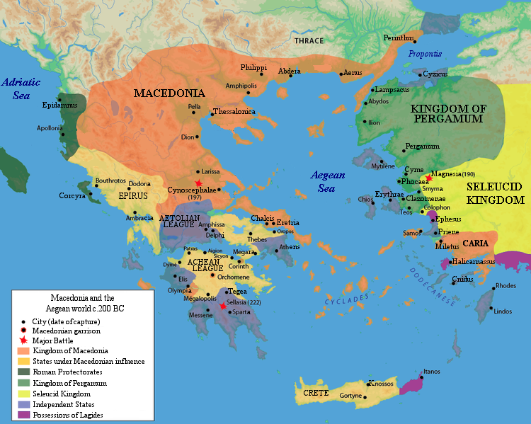

Settlers have to come from Somewhere
The heart of Alexanders empire was Greece. Before the coming of his father Philip, there was no political concept of Greece. There were simply Greek people. He was Macedonian, but Macedonians were Greek. Beyond that, in Anatolia there were numerious Greece cities and colonies scattered across the hilly land. When he set off on his conquest of Persia, he began at these Anatolian Greek cities.
From these lands, he called colonists forth to populate his other conquests. The men who made up the 20ish Alexandrias he founded had to come from somewhere. And they did, draining Macedon and Greece proper of manpower. After his death, the problem was made worse by the regions being split up among his many generals. Dispite constant warfare over the next century, no unifier came to the fore. The lands remained divided until they were all conquered by the Romans. Once unified they grew in power, quickly becoming one of the richest regions of the Roman empire. Indeed, they proved the longest surviving remnent of the Romans, with the Greek Byzantine Empire lasting until the 1400's AD.
